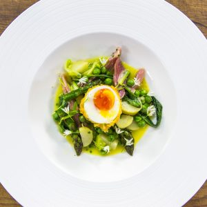

LA RICETTA DEL GIORNO - Il Mattino.it
2021.06.24 14:56
MENU ACCEDI ABBONATI NOTIFICHE ABBONAMENTI LOGOUT LEGGI IL GIORNALE HOME Sezioni Primo Piano Cronaca Politica Esteri Sanità Scuola e Università Vaticano Economia MoltoEconomia Indici Azioni MoltoDonna Obbligati a Crescere Economia Welfare Mobilità Donna Cultura Libri Mostre Periferie Spettacoli Cinema Televisione Musica Teatro Sanremo Giffoni Società Persone Moda Gossip Piaceri Sport Napoli News Video Azzurri Società Curiosità Benevento Serie B Salernitana Altro Serie C Avellino Casertana Cavese Juvestabia Paganese Turris Serie D Dilettanti Calcio Serie A Calcio Internazionale Nazionali Basket Avellino Caserta Scafati Napoli NBA Formula 1 Moto GP Olimpiadi Altri Sport Statistiche Tecnologia HiTech Apple Samsung Smartphone Tablet App-Giochi Tv-Foto Scienza Internet MoltoFuturo Motori Viaggi Grandi viaggi Italia Mondo Hotel & Ristoranti Speciale Weekend Italiano News salute Focus MoltoSalute Medicina Bambini e adolescenza Benessere e fitness Prevenzione Alimentazione Storie Mattino 4.0 Agroalimentare aerospazio biotecnologie ict turismo edilizia energia trasporti altri settori news Napoli Smart Europa Ultimissime EDIZIONI LOCALI napoli Cronaca Politica Cultura Style Ricordi dinfanzia avellino benevento Salerno Caserta Calabria Multimedia Video Primo Piano Glocal Sport Video Azzurri Società Spettacoli Tech Innovazione Express Moda Viaggi Motori Salute In Vista Adnkronos Foto Persone Italia Mondo Spettacoli Sport Calcio Napoli Tecnologia Innovazione Americas Cup Napolismart Marassi Servizi Meteo Oroscopo Necrologie Network Il Messaggero Il Mattino Corriere Adriatico Leggo Quotidiano di Puglia Roma Giorno & Notte Caltagirone Editore Piemme Guida allo Shopping NAPOLI AVELLINO BENEVENTO SALERNO CASERTA CALABRIA HOME Primo Piano Economia Cultura Spettacoli Sport Tecnologia ALTRE SEZIONI Primo piano Economia Cultura Spettacoli Sport Tecnologia Motori Viaggi Salute Europa Napoli Avellino Benevento Salerno Caserta Calabria Sapori della campania Napoli smart Oroscopo Meteo Tuttomercato Sondaggi Lettere Pc Dillo al mattino Guida allo shopping Video Foto
Danubio, la ricetta del pizzaiolo Davide Civitiello
di Emanuela SorrentinoLA RICETTA
Pasqua a casa, De Luca lancia la ricetta per la focaccia della tradizione
70LA RICETTA
Coronavirus, a Napoli sarà un trionfo di pastiere fatte in casa: ecco la ricetta esclusiva per una versione innovativa
22LA CURIOSITÀ
Pizza e sushi, arriva Pizza Ito con il sushiman Ignacio Hidemasa
di Giuliana CovellaLA RICETTA
Nasce il panino di Halloween: Sciuè lancia Vegetariano e Boscolo
13A TAVOLA
Sorpresa: nasce a Napoli la pizza allo champagne (con i gamberi di Mazara)
71LA RICETTA
Il Casatiello scomposto: la rivisitazione originale del tradizionale rustico pasquale
LE INVASIONI CULINARIE
Le invasioni culinarie
Napoli-Juventus
Video 10 LE INVASIONI CULINARIE
Le invasioni culinarie:
Napoli-Sampdoria
3 LE INVASIONI CULINARIE
Le invasioni culinarie
Napoli-Lazio
Video LE INVASIONI CULINARIE
Le invasioni culinarie
in Napoli-Bologna
4 LE INVASIONI CULINARIE
Le invasioni culinarie
Napoli-Chievo a cena
9 LE INVASIONI CULINARIE
Le invasioni culinarie
Napoli-Roma a tavola
Video 18 LA MIA RICETTA
La mia ricetta ,
il carciofo della nonna
102 LE RICETTE DI NATALE
I dolci di Natale:
il salame di zenzero
di Francesca Cicatelli 93 LE RICETTE DI NATALE
I dolci di Natale:
panettone Mennella
di Francesca Cicatelli 119 LE RICETTE DI NATALE
I dolci di Natale:
la cassata black
di Francesca Cicatelli 136 LE RICETTE DI NATALE
I dolci di Natale:
Kono con gli struffoli
di Francesca Cicatelli 224 LA RICETTA
Calamaro arrostito: ai fornelli la Top Chef Italia Fabiana Scarica
di Ilenia De Rosa 184FOOD
Piatti veg per carnivori: come convincerli con tre videoricette in 2 minuti Video
di Francesca CicatelliA TAVOLA
Sgombro con zuppetta di frutti di mare, ecco la videoricetta stellata
di Ilenia De RosaIL VIDEO
Quaglia marinata alle more, ecco la ricetta stellata | Video
di Ilenia De RosaFINGER FOOD
Se la genovese sta in una mano:
la videoricetta per riprodurla Video
di Francesca Cicatelli VIDEORICETTA
Non più solo salato:
il baccalà diventa dolce | Video
di Francesca Cicatelli Napoli vista dall alto: l anteprima con Sergio D Angelo
La grande menzogna di Harry sui soldi, Carlo lo sbugiarda: la somma stellare ricevuta dal padre
San Carlo, anteprima della Carmen per medici e infermieri in piazza Plebiscito
Napoli, Fabrizia Ramondino
Tokyo 2020, gli azzurri portabandiera alle Olimpiadi: Mattarella ci ha detto di goderci questa avventura
Ddl Zan, Draghi: Il nostro è uno stato laico
Draghi sbaglia per due volte il nome della deputata Ianaro: L onorevole Panaro, Tanaro, ah Ianaro
BLOGGER
DIRITTO & ROVESCIO di Aldo Balestra Saman, il nostro doveredi una degna sepoltura HERZOG di Marco Ciriello Una vita all’estremo CONTROSTORIE di Gigi Di Fiore L invenzione del Risorgimento nell Italia senza gli italiani PRONTOSOCCORSO di Maria Pirro Contagio, malattia, guarigione: quali fattori incidono sul Covid BATMAN è DI DESTRA di Corrado Castiglione Di sardine, tonni e aringhe
ovvero delle rivoluzioni mancate sotto il segno dei pesci
BORSA
GUIDA ALLO SHOPPING
Portatili: il notebook dei tuoi sogni al costo più vantaggioso
Le Light
LE CELEBRAZIONI
40 anni senza Elvis: a Napoli
in mostra la sua camicia da militare
LE ASSOCIAZIONI
Paolo Barrale presidente di Chic
entrano Iavarone e Salomone
di Santa Di Salvo LA MANIFESTAZIONE
A piazza Venezia arrivano le pecore
E la protesta di Coldiretti Foto Video
VERSO IL FESTIVAL
Aprile, Maldestro e Lele
in gara per Sanremo Giovani
LO STUDIO
Infarto, il gelo è nemico del cuore: il rischio aumenta del 34%
L'INTERVISTA
Petrella verso Sanremo:
Il pop è il mio mestiere
di Federico Vacalebre LO SHOW
San Carlo, biglietti
esauriti per Maradona
di Davide Cerbone 570 L'ALBUM
Servillo e Solis String Quartet, un Presentimento napoletano Video
di Federico VacalebreCULTURA
Napoli, serata berlinese
al Quartiere Intelligente
di Ida Palisi PERSONE
Reversibilità ridotta
se la vedova lavora
di Bruno Benelli IL TOUR
Tiziano Ferro in luglio all Arechi di Salerno, Napoli di nuovo esclusa dal giro dei grandi concerti
CANTANAPOLI
Francesco Di Bella e Nuova Gianturco : un disco dalle periferie di Napoli
VIDEO PIu VISTO
La grande menzogna di Harry sui soldi, Carlo lo sbugiarda: la somma stellare ricevuta dal padre
ANIMALANDO
L'AQUILA
Orso investito da un camion
l animale ferito è fuggito:
si teme per la sua sorte
di Patrizio Iavarone CHE SCOPERTA!
Trovata una bottiglia di whisky nello stomaco di un pesce e il video su TikTok diventa virale
di Marta FerraroI CONSIGLI
Caldo torrido, anche gli animali soffrono: ecco il vademecum anti afa
di Simona RomanòBANGKOK
Elefante sfonda il muro di una casa ed entra per cercare cibo: Un rumore nella notte
NAPOLI SMART
L'INIZIATIVA
Cinema intorno al Vesuvio , 44 serate e focus a Villa Bruno
di Emanuela SorrentinoLA FIERA
Napoli Città Libro, quattro giorni con 120 eventi in presenza a Palazzo Reale
IL TEATRO
Campania Festival, a Capodimonte
è di scena Cabaret Colette
LA KERMESSE
Giardini la Mortella, al via il Festival di orchestre giovanili nel segno di Frida Kahlo
di Ciro CenatiempoSAPORI della CAMPANIA
IL GUSTO
Il Piccolo Birrificio Napoletano porta la tradizione partenopea in bottiglia
di Alessandra FarroIL GUSTO
Nella Mostra d Oltremare nasce
l Accademia Napoletana del Caffè
L'INIZIATIVA
Global food innovation forum, nasce la prima comunità di pratica Agrifood
L'INIZIATIVA
Distilleria Petrone dà vita al Guappa Polizia , nuova limited edition del liquore a base di latte di bufala campana
GOSSIP
GOSSIP
Keita Balde e Simona Guatieri a Capri fra Inter e matrimonio
di Anna Maria BonielloRIVELAZIONI
Lory Del Santo e la notte con Mancini: Dopo quella cena feci una scelta tra lui e Vialli
FUTURI GENITORI?
Pierpaolo Pretelli e Giulia Salemi, la rivelazione di Fariba: Divento nonna
di E.C.LA STORIA
Myrta Merlino e l amore con Tardelli: Si è trasferito da me in 48 ore, impazzisco se non stiamo insieme
di Luca Uccello © 2021 Il Mattino - C.F. 01136950639 - P. IVA 05317851003 CALTAGIRONE EDITORE | IL MESSAGGERO | CORRIERE ADRIATICO | IL GAZZETTINO | QUOTIDIANO DI PUGLIA | LEGGO | PUBBLICITÁ CONTATTI | Privacy Policy | Cookie Policy | Informazioni legaliPreferenze cookie
